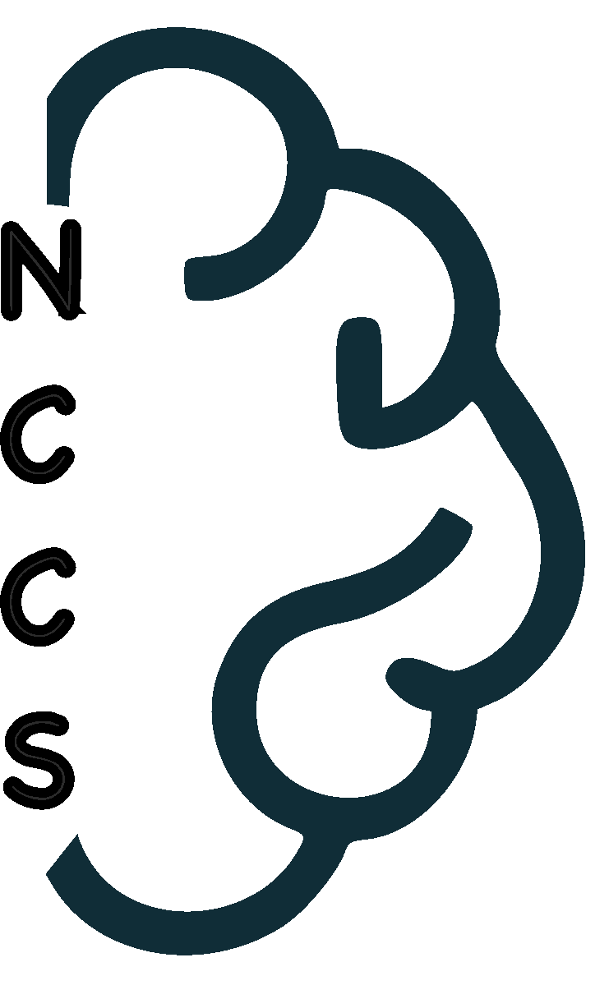

Nepal Center for Cognition and Society
About
About us
Mission and Values
People
Research
News
Contact
Meet our team
Dr. Pratik Bhandari
Director of Research
Sajana Aryal
Adjunct Researcher
Biraj Bhattarai
Adjunct Researcher
Kirk Goddard
Adjunct Researcher
Kranti Acharya
Adjunct Researcher
No matching items